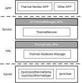

Overview
Thermal framework is used to track the device surface temperature within specified thermal limits and provide the interface to get the CPUs’ usages. It provides both high and low level interfaces to get the temperature information and CPUs’ usages.
Architecture
The thermal framework architecture is as shown in Thermal Framework. At the lowest layer, the Linux thermal drivers are responsible for abstract the interface to get the temperature information of thermal devices and the CPUs’ usages. Then the thermal HAL component provides the interface for upper layer to get the information from the Linux kernel.
The thermal service monitors the device surface temperature within the customized thermal limits parsed from a special configuration file constantly and gives throttling severity feedback to its clients.
Linux kernel
Provides the sysfs interface to get the temperature information of thermal devices.
Provides the procfs interface to get the CPUs’ usages.
Thermal HAL
Provides the low level interface to get the temperature sensors information of all devices.
Provides the low level interface to get the detail CPUs’ usages.
Thermal Service
Parses the thermal limits configuration file.
Monitors the device surface temperature constantly.
Gives throttling severity feedback to the registered clients.
Provides the high level interface to acquire the temperature information lists.
Provides the high level interface to obtain the CPUs’ usages.
{kind=link}

Interfaces
The thermal framework provides three layers of interfaces for user’s application from high layer to lowest layer.
API |
Introduction |
|---|---|
Thermal Manager |
High-level API for applications to get temperature info |
Thermal HAL |
Thermal Hardware Abstraction Layer API |
Linux Thermal Interface |
The standard Linux thermal device
|
It is suggested to use the high-level interfaces of Thermal Manager.
Linux Kernel APIs
Thermal APIs
The generic thermal sysfs provides a set of interfaces for thermal zone devices. Read /sys/class/thermal/temp to get the temperature and /sys/class/thermal/type to get the type of the thermal device in user space.
Refer to Linux thermal sysfs api to get more information.
CPU Load APIs
Linux exports various bits of information via /proc/stat. Refer to CPU Load to get more information.
Thermal HAL
Thermal HAL is the low level interface that interact with Linux thermal driver.
Create Thermal Hardware Manager
Use CreateThermalHwManager to create the thermal hardware manager.
ThermalHwManager *g_thermal_hw_manager;
int32_t ret = CreateThermalHwManager(&g_thermal_hw_manager);
Get Temperature Information
Use GetTemperatures to get the temperature information of thermal device list after create thermal hardware manager.
ThermalHwTemperature temperature_list[1] = {0};
int ret = g_thermal_hw_manager->GetTemperatures(temperature_list,1);
Get CPUs’ Usages
Use GetCpuUsages to get the CPUs’ usages after create thermal hardware manager.
ThermalHwCpuUsage cpu_usage_list[2] = {0};
int ret = g_thermal_hw_manager->GetCpuUsages(cpu_usage_list,2);
Destroy Thermal Hardware Manager
Destroy it using DestoryThermalHwManager when the manager is no longer used.
DestoryThermalHwManager(g_thermal_hw_manager);
Thermal Manager
Thermal Manager is the high-level interface for application to register a temperature status callback. It interacts with Thermal Service to dispatch the temperature status to registered application. Thermal Service runs at background when system started. It continues to obtain the temperature information from thermal HAL in thermal limits parsed from a special configuration file.
Temperature Status
The temperature status translates into specific throttling levels as follows:
Temperature status |
Description |
|---|---|
NONE |
No throttling |
LIGHT |
Light throttling. User experience isn’t impacted. |
MODERATE |
Moderate throttling. User experience isn’t greatly impacted. |
SEVERE |
Severe throttling. User experience is largely impacted. |
CRITICAL |
Critical throttling |
EMERGENCY |
Emergency throttling |
SHUTDOWN |
Shutdown throttling |
Configuration File
We provide a configuration file for customer to notify the maps between throttling levels and temperature values of thermal devices. The configuration file indicates the thermal limits and locates in <sdk>/sources/fwk/frameworks/systemserver/res/thermal_info.cfg.
It is a plain text file consisted of all the configurations about the thermal devices monitored.
The configuration items includes name, type, hot threshold and monitor. The name and type item is matched to the device information from thermal HAL. The hot threshold item indicates thermal limit levels, it could be modify to according to the throttle level. The monitor item switches to decide whether to monitor this thermal device or not.
For example:
"HotThreshold":[
"NAN",
38.0,
45.0,
48.0,
50.0,
52.0,
54.0
],
Means the throttling levels from light to shutdown is 38.0, 45.0, 50.0, 52.0 and 54.0.
Create Thermal Manager
Use RTThermalManager_Create to get the pointer of the RTThermalManager.
RTThermalManager* manager = RTThermalManager_Create();
Monitor Temperature Status
Using RTThermal_RegisterListener App can add and remove listeners and access the temperature status continuously though the Thermal Manager.
void RTThermalListenerImpl(const RTThermalTemperature* temperature) {
RTLOGI("device type:%d", temperature->dev_type);
RTLOGI("temperature_status:%d", temperature->temperature_status);
RTLOGI("value:%f", temperature->value);
}
RTThermalListener* listener = (RTThermalListener*) malloc(sizeof(RTThermalListener));
listener->NotifyThrottling = &RTThermalListenerImpl;
RTThermal_RegisterListener(manager, listener);
Use RTThermal_UnregisterListener to unregister the listener and recycle the listener after the listener is not used.
Get Temperature Status
Use RTThermal_GetThermalTemperatureStatus to get the temperature status immediately after create RTThermalManager.
int32_t ret = RTThermal_GetThermalTemperatureStatus(manager);
Get Temperature List
Use RTThermal_GetTemperatures to get the temperature list of all thermal devices after create RTThermalManager.
float temprature_list[1] = {0}
RTThermal_GetTemperatures(manager, temprature_list, 1);
Get Temperature List with Specified Type
Use RTThermal_GetTemperaturesWithType to get the temperature list with special type after create RTThermalManager. Only support RTTHERMAL_CPU type now.
float temprature_list[1] = {0}
RTThermal_GetTemperaturesWithType(manager, temprature_list, 1, RTTHERMAL_CPU);
Get CPU Usage List
Use RTThermal_GetCpuUsages to get the CPU usage list after create RTThermalManager.
RTThermalCpuUsageInfo cpu_usage_list[2] = {0};
RTThermal_GetCpuUsages(manager, cpu_usage_list, 2);
Destroy Thermal Manager
Destroy it using RTThermalManager_Destroy, when the manager is no longer used.
RTThermalManager_Destroy(manager);